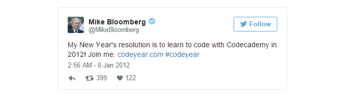

为什么一定要让你的孩子学编程？

本站去年发布过一篇文章 《幼儿园就要学编程——中国家长都疯了？》 介绍了目前儿童编程教育的现状。但是，「大众创业 万众编程」真得有必要吗？本文作者告诉你，未必。
会编程的确是一项了不起的技能。你可以写 app，建网站，不管有什么好想法都可以亲自实现出来。相信我们的世界会需要越来越多的程序员和开发工程师。
但并不是每个孩子都必须要 学编程。
打个不恰当的比方。营养学对人至关重要。人类需要知道基本的营养学知识以免受糖尿病或肥胖症之苦。垃圾食品对身体有害不要多吃，水果蔬菜有助于健康要天天吃，坚持运动能保持体型良好——总之，了解基本的营养学知识可以保持身体健康活得更久。
对比之下，关于车的知识就没那么重要。当然，如果你知道怎么自己换油或补胎会非常方便；但不会也没关系，你可以雇人给你换油或者补胎。
编程的重要程度和懂车的知识差不多，同样的，你也可以雇别人帮你写 app 建网站。
但是你永远不能雇人替你吃饭，或替你减肥降低胆固醇。
这个例子有些过度概括了，说这么夸张只是为了摆明观点：
并不是所有人都需要学编程。
公众人物们都信誓旦旦说他们要带头学编程，我就奇怪了，Michael Bloomberg 先生（彭博社创始人，美国商业大亨、政治家和慈善家）学了编程后会对工作有什么帮助吗？

NBA 球员Chris Bosh 也公开支持编程，但是他本人灌篮的时候并不需要会编程。
这些名人们的大力推动，实际上把人们对编程的认识带跑偏了。
我们并不是为了编程而学编程，不是为了敲代码在屏幕上画线。学编程的目的是为了解决一些现实的、基本的问题。
奥巴马总统批了40亿美元给公立学校用于计算机教育，让孩子们有更多机会去编程。但是编程训练营的崛起、巨额资金的投入，使得编程成了一种强制。
可能奥巴马是想追上中国的步伐，毕竟中国的小孩幼儿园就开始学编程了，也许是想给一些目前尚不存在的岗位做人才储备，毕竟编程对未来的创新十分必要。我们只是经常忘了自己的初衷。
我并不是抵制编程，只是不想每个人都为了编程而学编程。很多成功的企业家一句代码不会写也挣了几十亿。
不管孩子还是成人，最重要的生存技能是学会有效沟通；同时，面对问题，能永远保持批判性思维，学会向世界输出自己的价值观。
文章来源：thehustle由 TECH2IPO / 创见 二因斯坦 编译，首发于创见（http://tech2ipo.com/），转载请注明出处
相关链接想通过手机客户端（支持 Android、iPhone 和 Windows Phone）访问开源中国：请点这里
本站文章除注明转载外，均为本站原创或编译
欢迎任何形式的转载，但请务必注明出处，尊重他人劳动共创开源社区
转载请注明：文章转载自：开源中国社区 [http://www.oschina.net]
本文标题：为什么一定要让你的孩子学编程？
本文地址：http://www.oschina.net/news/70795/the-whole-world-does-not-need-to-know-how-to-code
新一篇：Tsuru 0.13.1 发布，开源 PaaS 平台 1分钟前
- 让我来告诉你，为什么大数据并不能帮你找到女朋友 3天前
- OSChina 周一乱弹 —— 为什么活得很累1个月前
- 为什么使用开源软件？ 2个月前
- 一向“圈地自萌”的苹果为什么选择将Swift开源？ 2个月前
- 为什么我要垂直对齐代码（你也要如此！ 3个月前
- D、GO、Rust谁会在未来取代C?为什么？ 3个月前
- OSChina周五乱弹————为什么程序媛那么少？ 4个月前

- ajson 0.2.0版发布，飞快的JSO... 5小时前
- Beetlsql 2.0 正式发布... 8小时前
- OpenIO —— 开源的软件定义储存... 10小时前
- Git 项目推荐 | 强大的 iOS 视图... 10小时前
- OSChina 周五乱弹 —— 介绍下成... 10小时前
- 每日一博 | Android 中 WebVie... 10小时前